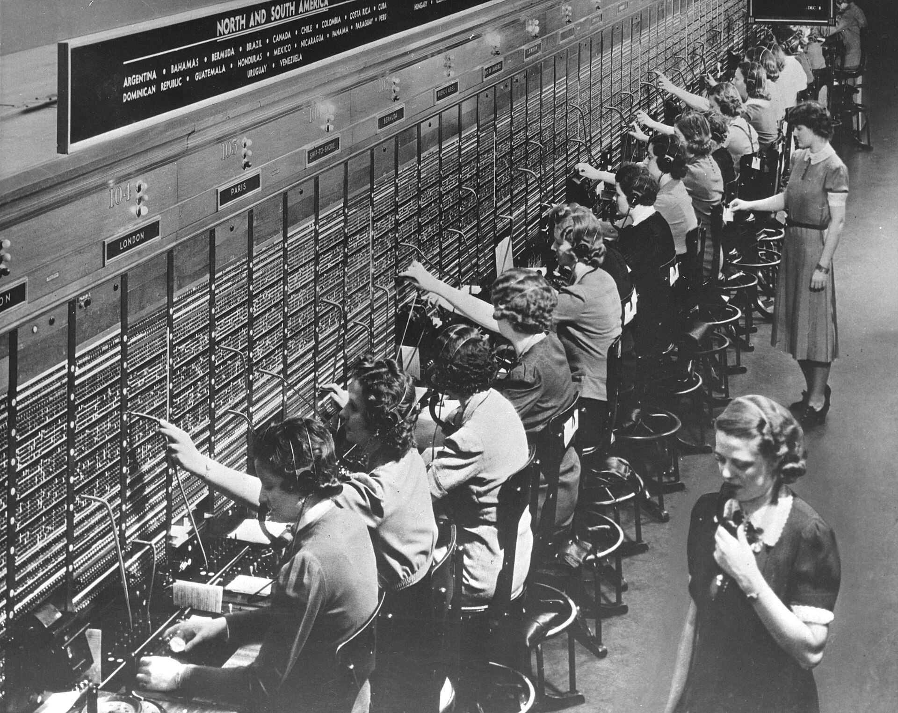

Brightwater Plumbing, as an example
- Dana WhitfieldWater heater leaking in the garage7:42 amUrgent
- Luis OrtegaQuote for a kitchen sink swap9:15 am
- Pam ReddickMove Thursday’s visit11:03 am
- Gary HensleyAsked about a second bathroom12:30 pm
Each missed call is written up from the voicemail and sorted by urgency.